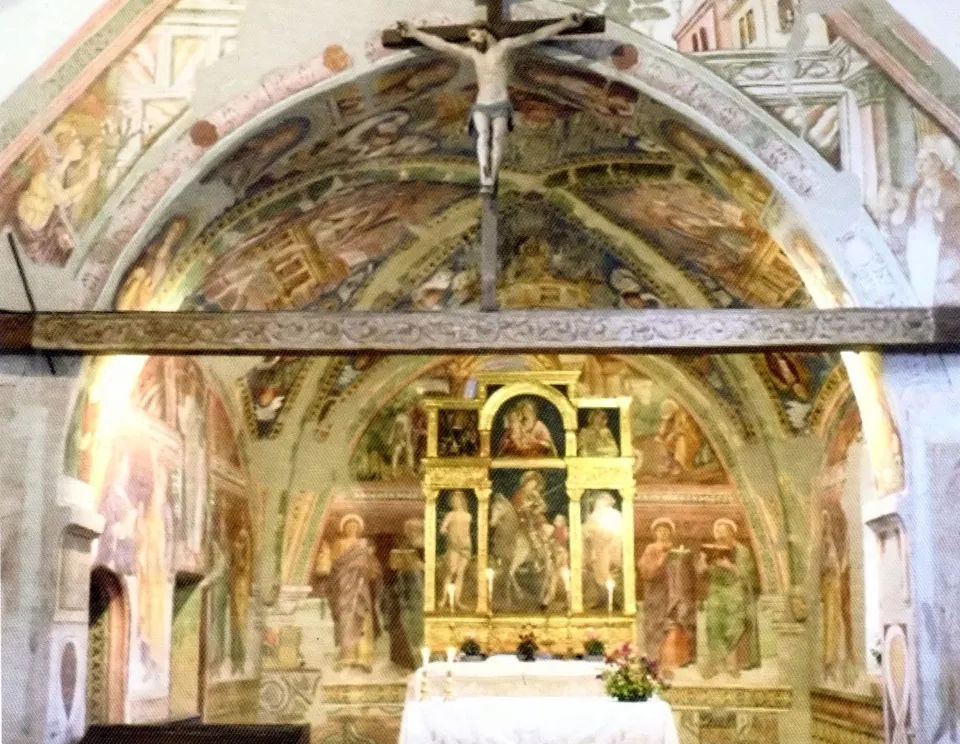

Il comune di Socchieve custodisce alcune delle perle artistiche più interessanti della Carnia, come la Chiesa di San Martino e la Pieve di Castoia. Ma non c'è solo il patrimonio "immobile": qui si tiene la rassegna d'Arte, Cultura e Lavoro più importante della Carnia, con artigiani e artisti carnici e friulani che con le loro opere raccontano una terra che sa parlare con le mani forse più che con le parole.

Arte e culturaChiesa di San Martino
Al centro del paese, con le spalle al colle di Castoia, la chiesetta di San Martino è una delle costruzioni sacre più tipicamente carniche: portico d'ingresso, campanile a vela, volta a capriate e copertura in coppi.
Nella sagrestia e nel basamento dell'absidiola sono emersi resti di affreschi romanici di ottima qualità (Cristo in mandorla con i simboli degli Evangelisti, frammenti di teste d'Apostoli, decorazioni) che testimoniano l'antichità dell'edificio.

Arte e culturaRassegna Carnica Arte Cultura Lavoro
Organizzata dal Comitato Gianfrancesco da Tolmezzo, la rassegna estiva dà spazio alla cultura, all'arte e al lavoro che il territorio carnico e friulano sa esprimere: un'occasione d'incontro e confronto per tenere alta l'attenzione sulle cose piccole e importanti del vivere in montagna.